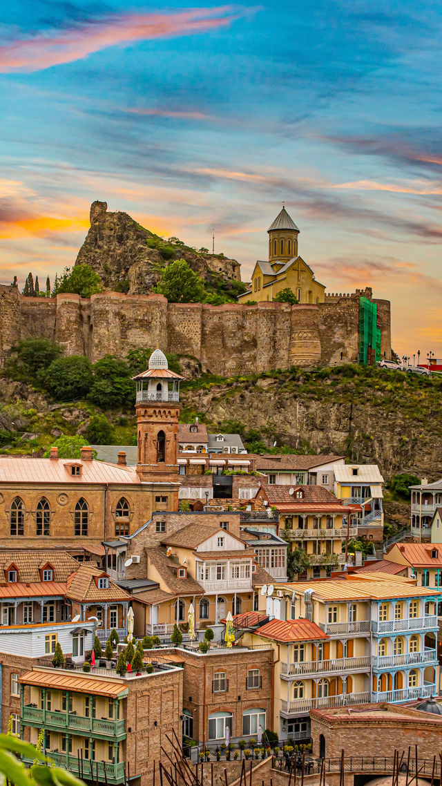
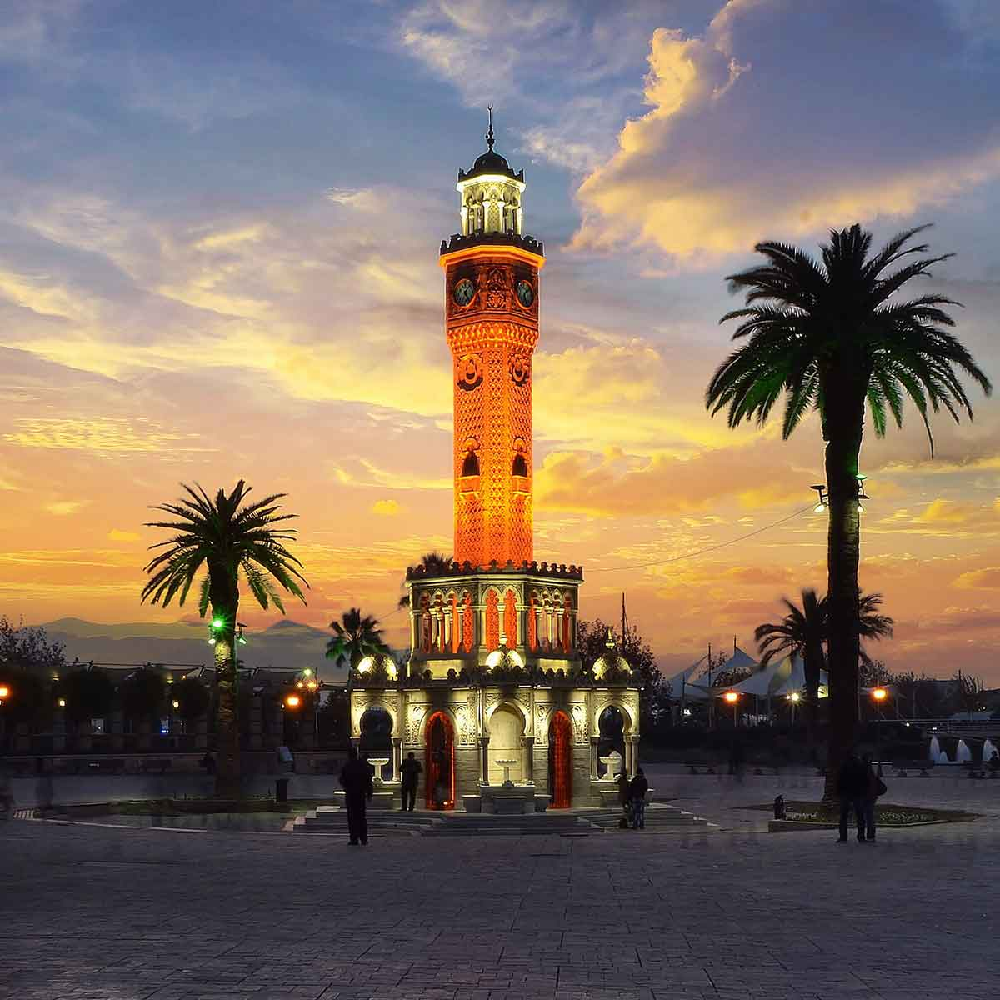

Tbilisi commonly known by its former name Tiflis, and often mispronounced as Tiblisi, is the capital and the largest city of Georgia, lying on the banks of the Mtkvari River at the altitude of 400m above sea level with a population of roughly 1.5 million inhabitants. Tbilisi's varied history is reflected in its architecture, which is a mix of medieval, classical, Middle Eastern, Art Nouveau, Stalinist and Modernist structures. The name Tbilisi derives from Old Georgian T'pilisi, and further from T'pili. The name "T'pili" or "T'pilisi" (literally, "warm location") was therefore given to the city because of the area's numerous sulphuric hot springs that came out of the ground.

İzmir, historically known as Smyrna, is a 8,500-year-old port city in western Turkey, serving as a major Aegean trade hub since the Neolithic period. A key center for civilizations including the Ionians, Romans, and Ottomans, the city was rebuilt by Alexander the Great and became a major cosmopolitan gateway.